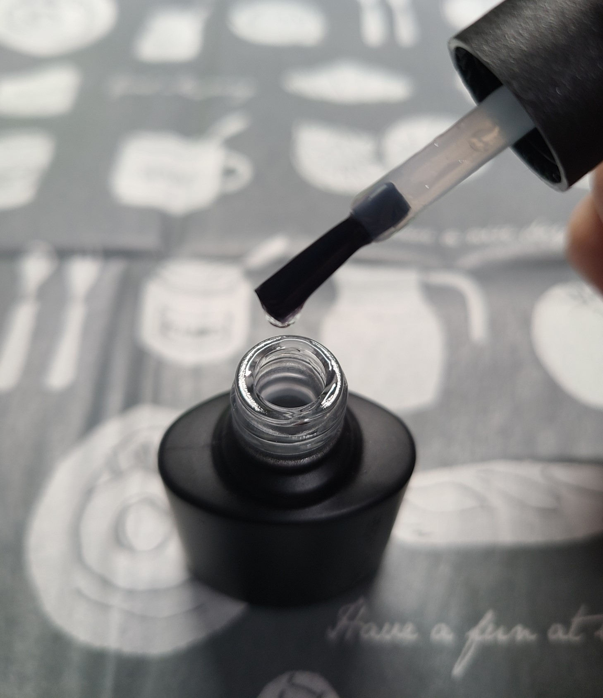
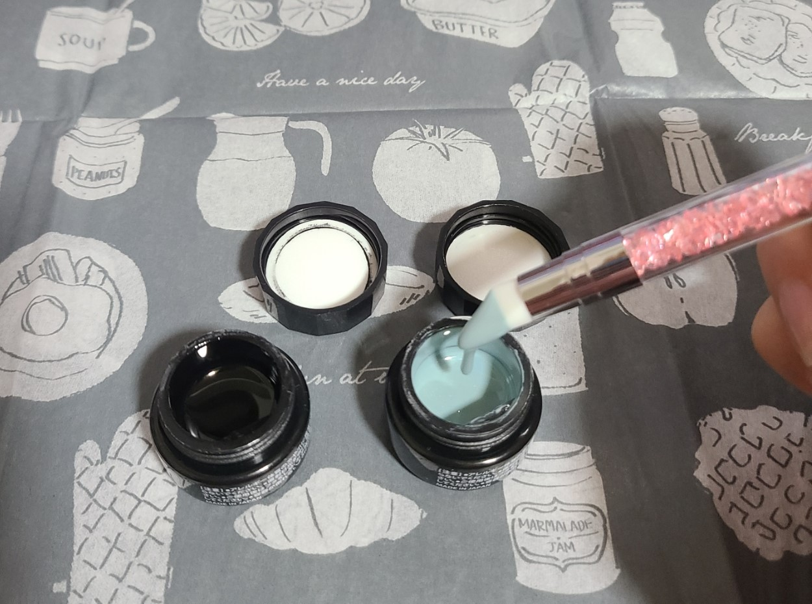
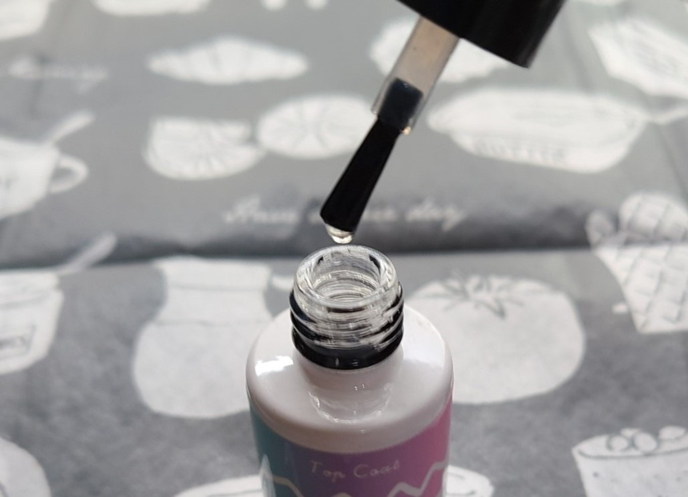
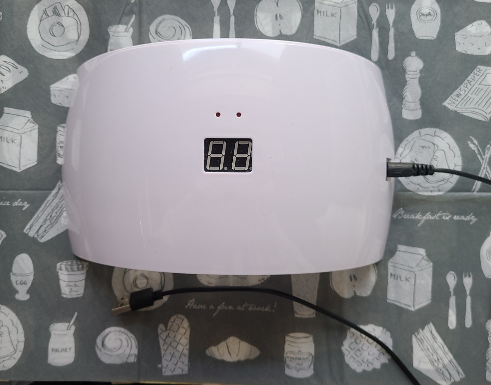
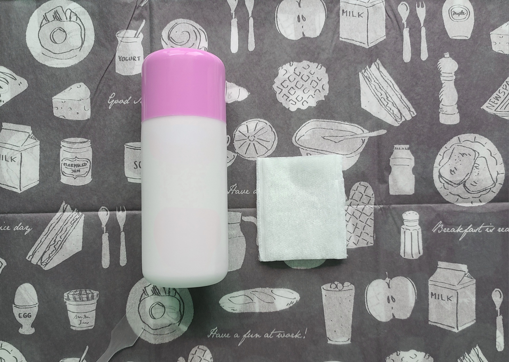
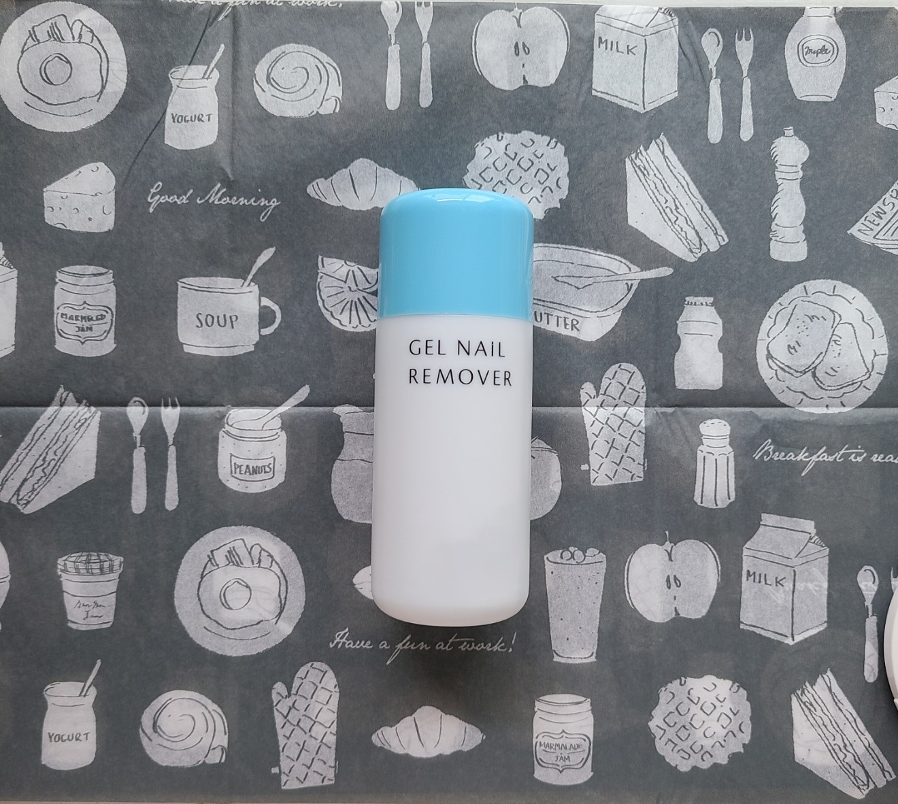

指先から表現。
ひと塗りするたび、キレイが広がる。
指先までオシャレを楽しみたい、
アートに触れたい、
上品さをさりげなく演出したい、
季節感を味わいたい、
いつもとちょっと違う自分でいたい
……
ジェルネイルの輝かせ方は無限大。
もっと自分を楽しもう！
about
ジェルネイルって？
かわいく､キレイに、
長持ちが全部叶う！
ジェルネイルはぷっくり＆ツヤツヤ感が特徴で、今でも人気上昇中！
いろんなお店で扱われているから、始めるための道具がそろえやすくカラーバリエーションだって豊富♪
色味・透け感・立体感など、様々な要素を自分好みにカスタマイズして楽しめる最高のオシャレアイテムなんです！！
挑戦しやすい
デザインも
盛りだくさん！
ジェルネイルは、ネイルポリッシュよりも丈夫でアートの幅が広いことが大きな魅力！
「ワンカラー以外もやってみたい！」「かわいく見せる方法を知りたい！」というオシャレさんのために、今すぐ取り入れられるアレンジ方法も紹介しているので要チェック♪
essentials
最低限必要なもの
- 
ベースジェル自爪の表面を均一に整え、カラージェルを密着させる。カラーを自爪へ直接触れさせないことで色素沈着も防ぐ！point
「ピールオフ」の記載がある商品だとオフが簡単で爪を傷めにくい＆大幅時短♪
- 
カラージェル色がついたジェル。
重ね塗りすることで色味の濃さの調節可！pointベース・トップジェルと同じメーカーのものを使用すると思わぬ硬化不良防止に！
- 
トップジェルジェルネイルの最後の仕上げに使う。
表面に光沢を出す＆ネイルの保護の役割がある。point「ノンワイプ」の記載がある商品だと未硬化ジェルの拭き取りの手間を省ける！
- 
UV/LEDライトジェルの硬化に使うライトはUVとLEDの２種類。使用感等が各々違うので自分に合う方でOK！
【UVライト】
・価格が安い
・硬化時間は２～３分
・硬化時、僅かに熱を発する
【LEDライト】
・硬化時間は30～60秒
・消費電力が少ない - 
油分除去アイテムベースジェルを塗る前に使用するだけで持ちがup♪メーカー販売品以外だと消毒用エタノールでも代用可。point
メーカーによって「ネイルワイプ」や「クレンザー」など名称は様々。購入の際は下調べ推奨！
- 
リムーバーネイルをオフしたいとき、ジェルを柔らかくして取り除きやすくするアイテム。point
ベースジェルがピールオフタイプであれば用意しなくてもOK！
必要に応じて準備を。
how to
はじめ方
塗るときは皮膚に触れないように爪の端から1～2ミリ程度あける。
もし皮膚に触れてしまったら拭って除去を（ジェルアレルギー予防に繋がります）。
カラー・トップジェルを塗るときも注意！
カラージェルは濃淡を均一にするため２回以上の重ね塗りがオススメ。
はっきりした色味にしたいときは好みの濃さになるまで塗る→硬化を繰り返す。
arrange
簡単アレンジ法
-
マグネットネイル
viewmore ▶︎ -
マットネイル
viewmore ▶︎ -
ミラーネイル
viewmore ▶︎ -
オーロラネイル
viewmore ▶︎ -
ドットネイル
viewmore ▶︎ -
ステッカー・パーツ
viewmore ▶︎
color
オススメの色
明るく温かみがある色で、肌が血色よく見える！
上品さを出したい人へ♪
濃い色との対比で肌への美白効果アリ！
存在感を出したい人に推したいカラー♪
ホワイトより色ムラが目立ちにくくオススメ！
他のカラーにも合わせやすい♪
どんなテイストの服にも合わせやすい！
きれいめもカジュアルもおまかせ♪
年齢・シーンを問わず使える、よく馴染むカラー！
自然なツヤ感が手に入る♪
かっこよさを演出したいときに！
他のカラーと混ぜればくすみカラーを作れちゃう♪
強いアクセントを出したい人へ！
ネオンカラー好きにもオススメのカラー♪